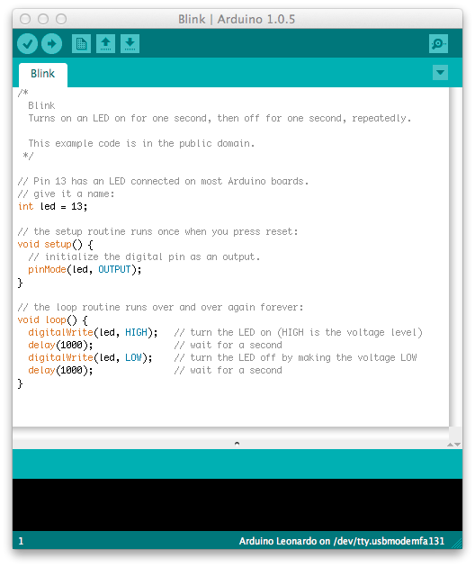

Coding with hardware
A quick talk about Arduino
What is an arduino?
A little history
Started in 2005 at Interaction Design Institute Ivrea by one of the teachers there Massimo Banzi

Open.source to the (hard)core
"Open-source physical computing platform"
- Simple and clean to use
- Fully open-source IDE
- Fully open-source hardware
- And Cross platform
Price
From about $60 and down to $5 depending on type++
Boards
( The most popular ones )Arduino UNO
 ATmega328p ( 14 IO pins ( 6 as PWM ) + 6 Analog Inputs )
ATmega328p ( 14 IO pins ( 6 as PWM ) + 6 Analog Inputs )
Arduino Leonardo
 ATmega32u4 ( 20 IO pins (7 as PWM and 12 as Analog Inputs ) and build in usb comm )
ATmega32u4 ( 20 IO pins (7 as PWM and 12 as Analog Inputs ) and build in usb comm )
Arduino Mega
 ATmega2560 ( 54 IO pins (15 as PWM ), 16 as Analog Inputs and 4 UARTs )
ATmega2560 ( 54 IO pins (15 as PWM ), 16 as Analog Inputs and 4 UARTs )
What do you do with them?
Well, you build stuff!
Here are some examples
A wrist watch

BigTime Watch Kit ( https://www.sparkfun.com/products/11734 )
A Internet radio

FabFM Radio Kit ( https://www.sparkfun.com/products/11043 )
Quadcopter

( http://copter.ardupilot.com/)
The list is as long as you imagination....
So how do I get started?
The code
Based on wiring ,a simplified version of c++
Easy to learn and well documentet at http://arduino.cc/en/Guide/HomePage
The IDE
Want to learn more?
Go to the Arduino website: http://arduino.cc/
Or stop by your local hackerspace Bitraf: https://bitraf.no/